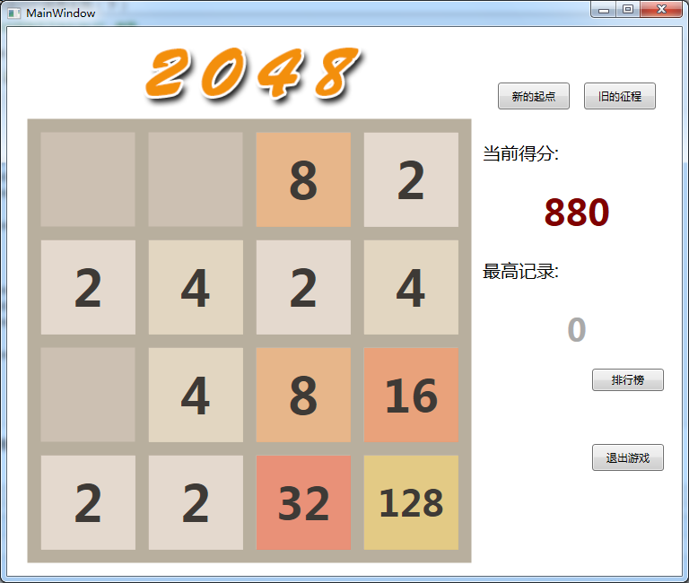

接着上一篇继续~~~
6、动画显示增加分数
/// <summary>
/// 动画显示增加得分
/// </summary>
/// <param name="addScore"></param>
private void ShowAddScore(int addScore)
{
lblAddScore.Content = "+" + addScore.ToString();
DoubleAnimation top = new DoubleAnimation();
DoubleAnimation opacity = new DoubleAnimation();
opacity.AutoReverse = true;
opacity.From = 0;
opacity.To = 1;
top.From = 0;
top.To = -40;
Duration duration = new Duration(TimeSpan.FromMilliseconds(500));
top.Duration = duration;
opacity.Duration = duration;
tt.BeginAnimation(TranslateTransform.YProperty, top);
lblAddScore.BeginAnimation(Label.OpacityProperty, opacity);
}该动画通过位置向上移动和透明度变化实现。
7、移动操作
7.1 移动操作方法
每按下一次上下左右键，则调用相应的移动操作方法。以前实现的，代码比较繁琐，这次没去精简清理，看看就好。这是左移操作方法：
/// <summary>
/// 左移
/// </summary>
private void MoveLeft()
{
int score = 0;
Storyboard sb1 = new Storyboard();
// 移去左侧和中间的空块（左移）
for (int y = 0; y < 4; y++)
{
for (int x = 0; x < 4; x++)
{
for (int i = x + 1; i < 4; i++)
{
if (gridData[y, i] != 0 && gridData[y, x] == 0)
{
gridData[y, x] = gridData[y, i];
if (lblArray[y, i] == null)
{
lblArray[y, i] = new Label();
lblArray[y, i].SetValue(Canvas.LeftProperty, lblPadding * ((i) + 1) + (double)((i) * lblWidth));
lblArray[y, i].SetValue(Canvas.TopProperty, lblPadding * (y + 1) + (double)(y * lblWidth));
lblArray[y, i].SetValue(Label.ContentProperty, gridData[y, i].ToString());
lblArray[y, i].SetValue(Label.BackgroundProperty, SetBackground(gridData[y, i]));
lblArray[y, i].SetValue(Button.FontSizeProperty, (double)SetFontSize(gridData[y, i]));
}
// 左移方块动画
DoubleAnimation da1 = null;
double from = (double)lblArray[y, i].GetValue(Canvas.LeftProperty);
double to = (x + 1) * lblPadding + x * lblWidth;
da1 = new DoubleAnimation(
from,
to,
new Duration(TimeSpan.FromMilliseconds(300)));
da1.AccelerationRatio = 0.1;
da1.DecelerationRatio = 0.1;
Storyboard.SetTarget(da1, lblArray[y, i]);
Storyboard.SetTargetProperty(da1, new PropertyPath("(Canvas.Left)"));
sb1.Children.Add(da1);
gridData[y, i] = 0;
}
}
}
}
// 相邻相同方块合并后加到左侧
for (int y = 0; y < 4; y++)
{
for (int x = 0; x < 4; x++)
{
if (x + 1 < 4 && gridData[y, x] == gridData[y, x + 1])
{
// 如果右侧的方块未及时生成
if (gridData[y, x + 1] != 0)// && gridData[y,x]!=0)
{
if (lblArray[y, x + 1] == null)
{
lblArray[y, x + 1] = new Label();
lblArray[y, x + 1].SetValue(Canvas.LeftProperty, lblPadding * ((x + 1) + 1) + (double)((x + 1) * lblWidth));
lblArray[y, x + 1].SetValue(Canvas.TopProperty, lblPadding * (y + 1) + (double)(y * lblWidth));
lblArray[y, x + 1].SetValue(Label.ContentProperty, gridData[y, x + 1].ToString());
lblArray[y, x + 1].SetValue(Label.BackgroundProperty, SetBackground(gridData[y, x + 1]));
lblArray[y, x + 1].SetValue(Button.FontSizeProperty, (double)SetFontSize(gridData[y, x + 1]));
}
// 左移动画
DoubleAnimation da2 = null;
double from = (double)lblArray[y, x + 1].GetValue(Canvas.LeftProperty);
double to = from - lblWidth - lblPadding;
da2 = new DoubleAnimation(
from,
to,
new Duration(TimeSpan.FromMilliseconds(200)));
da2.AccelerationRatio = 0.1;
da2.DecelerationRatio = 0.1;
Storyboard.SetTarget(da2, lblArray[y, x + 1]);
Storyboard.SetTargetProperty(da2, new PropertyPath("(Canvas.Left)"));
sb1.Children.Add(da2);
}
gridData[y, x] *= 2;
gridData[y, x + 1] = 0;
score += gridData[y, x];
}
}
}
if (score != 0)
{
ShowAddScore(score);
currScore += score;
lblCurrScore.Content = currScore.ToString();
}
// 将合并后出现的中间空方块移去（再次左移一次）
for (int y = 0; y < 4; y++)
{
for (int x = 0; x < 4; x++)
{
for (int i = x + 1; i < 4; i++)
{
if (gridData[y, i] != 0 && gridData[y, x] == 0)
{
gridData[y, x] = gridData[y, i];
if (lblArray[y, i] == null)
{
lblArray[y, i] = new Label();
lblArray[y, i].SetValue(Canvas.LeftProperty, lblPadding * ((i) + 1) + (double)((i) * lblWidth));
lblArray[y, i].SetValue(Canvas.TopProperty, lblPadding * (y + 1) + (double)(y * lblWidth));
lblArray[y, i].SetValue(Label.ContentProperty, gridData[y, i].ToString());
lblArray[y, i].SetValue(Label.BackgroundProperty, SetBackground(gridData[y, i]));
lblArray[y, i].SetValue(Button.FontSizeProperty, (double)SetFontSize(gridData[y, i]));
}
// 左移动画
DoubleAnimation da = null;
double from = (double)lblArray[y, i].GetValue(Canvas.LeftProperty);
double to = (x + 1) * lblPadding + x * lblWidth;
da = new DoubleAnimation(
from,
to,
new Duration(TimeSpan.FromMilliseconds(200)));
da.AccelerationRatio = 0.1;
da.DecelerationRatio = 0.1;
Storyboard.SetTarget(da, lblArray[y, i]);
Storyboard.SetTargetProperty(da, new PropertyPath("(Canvas.Left)"));
sb1.Children.Add(da);
gridData[y, i] = 0;
// isMove = true;
}
}
}
}
sb1.Completed += Sb1_Completed; // 所有动画完成后执行事件
sb1.Begin();
}
/// <summary>
/// 动画完成后运行事件
/// </summary>
/// <param name="sender"></param>
/// <param name="e"></param>
private void Sb1_Completed(object sender, EventArgs e)
{
// 检查游戏是否结束
if (isGameOver())
{
ShowGameOver();
}
else
{
NewNum();
ShowAllLabel();
}
}向右、向上和向下的方法类似。
7.2 xaml文件中添加Window控件的keyDown事件
KeyDown="Window_KeyDown"
对应的cs代码如下：
private void Window_KeyDown(object sender, KeyEventArgs e)
{
if (!isStarted)
return;
switch (e.Key)
{
case Key.Left:
if (!isGameOver())
MoveLeft();
else
ShowGameOver();
break;
case Key.Right:
if (!isGameOver())
MoveRight();
else
ShowGameOver();
break;
case Key.Up:
if (!isGameOver())
MoveUp();
else
ShowGameOver();
break;
case Key.Down:
if (!isGameOver())
MoveDown();
else
ShowGameOver();
break;
}
}大致如此。最后看看效果图吧~~
